9. That’s All, Folks!¶
This is the final chapter of the Dwarf Fortress walkthrough.
9.1. Marksdwarves for Pest & Goblin Control¶
It was about this time that I realized that the grazing animals in their pastures outside had scattered and the dwarves attempting to round them up were fleeing in abject terror. The reason was clear: at the bottom of the screen I saw:
Etur Ozarlolor, Farmer cancels Pen/Pasture Stray Water Buffalo Calf (Tame): Interrupted by Kea.
Bringing up the Units screen by
pressing u and scrolling right to Others, I
select a Kea. Bracing myself, I press v and lay
my eyes on the beast.
A small, green, intelligent mountain parrot.
Terrifying stuff. Let`s locate it on the map. Go back to the
Units screen, select a Kea, and press
z to Go to Unit.
The keas are flying around up in the sky, out of reach of our military. This seems like a great time to organize a marksdwarf militia! Marksdwarves are an excellent tool for repelling invasions of non-undead creatures because they can engage from behind fortifications without exposing themselves to much danger.
First, let`s build some archery targets.
- Press
b,A(or find Archery Target at the bottom). - Place four or more in a room somewhere. I built mine in the spare room next to the melee squad barracks:
- Hit
qover a target. - Hit
qfor Make Archery Range. - Increase the blue size until it covers each of the targets
neatly, hit
Enter. - Look at the top right. You’ll see Shoot: From Left to Right.
Use
wasdto chose the proper direction. For me, I want them shooting down so I hits. - Repeat this on each target you placed. Unfortunately, a bug necessitates this micromanagement.
- Job done! Range is now ready!
Now, we need some warm bodies to fill the ranks.
- Make a squad of six or more slackers. Ten is great.
- Set them to use the Archer preset uniform. This includes leather armor (if you have any) and a crossbow of any material.
- Make a bunch of wood crossbows. Crossbow ranged attacks are
identical across material type, so wood ones are fine. Wood
crossbows are made at a Bowyers Workshop (
b,w,b). Material type for ranged weapons only effects their damage in melee. - Unlike shields, bucklers can be used simultaneously with crossbows but give a penalty to hit. Build some if you`re feeling generous.
- Marksdwarves should only be used from behind
Fortifications or against harmless pests, so armor is
not necessary. But, if you like, armor certainly helps when an
Elite Goblin Crossbowman starts threading bolts through
your carefully-constructed Fortifications. If you
decide to use metal armor, be sure to edit the archer squad’s
uniform accordingly with
m,e,U. - Queue up some more backpacks and quivers at the Leather Works.
Unfortunately, a bug often prevents marksdwarves from switching between bolts of different materials for combat and training. Therefore, we have to ensure that we use a single material type of bolt for training and combat. We have lots of bone lying around outside in our refuse stockpile, so let`s make bone bolts for now:
- Build one or two Craftsdwarfs Workshops next to the outdoor refuse pile.
- Queue up Make bone bolts and set it on repeat or use workflow to make about 400.
- Hit
m,a,f, to bring up the Ammunition menu. - Select your marksdwarf squad. To ensure that only bone bolts are used in combat and training:
- Select the exiting bolts and hit
dto delete them. - Hit
c, select bolts, pressEnter, then hitMand select bone. - Ensure that the resulting bone bolts are used in
training and combat by pressing
TandC. - Change the amount to 200 with
+/-. Your ammo screen should look like this:
- Make sure that your marksdwarf squad is set to
Active/Training in the Military screen
(
m,a). - Set up your Marksdwarves training schedule like you did with your
melee squads. Hit
m,sto bring up the Squad Schedules panel, navigate to Squad Schedules: Active/Training with/*, and set your new Marksdwarf squad to train with at 2 or 3 minimum for every month. - With everything set up correctly, your marksdwarves should grab some equipment and start practicing!
Due to a bug, dwarves sometimes cannot drop carried ammo in order to pick up ammo of a different material type, such as iron. This can cause them to never practice or even fail to engage the enemy because they cannot drop their ammo in order to pick up practice or war ammo. You may be affected by this bug if you eventually decide to switch from bone bolts to metal bolts, which are much deadlier. If you have problems, consult the DF Wiki.
9.2. Putting the Fortress in Dwarf Fortress¶
Congratulations on your new squad of marksdwarves! Besides Kea sniping, marksdwarves are great at defending from behind fortifications. Let’s make some!
There are a few important things to keep in mind when building complex fortress defenses:
- Enemies will take the shortest path from the outside into your fortress.
- Some enemies can destroy doors and other furniture, but none can destroy closed draw bridges or constructed walls.
- Marksdwarves must stand adjacent to fortifications in order to shoot through them, so it`s a good idea to make 1-tile wide halls adjacent to fortifications and use burrows to ensure they stand in the right spot.
- You should also account for the unexpected - attackers that can fly, jump, climb, etc.
The specific design of your fortifications and traps is limited only by your creativity. The design below is an example of maximizing the distance that attackers must cover while being exposed to marksdwarf fire. As the attackers wind down the descent, they are exposed to fire from the fortified gallery above. Then, they must get past the melee squads in the secondary killzone which is also covered by a fortified gallery. You can make far more complex (and satisfying) defenses than this - TinyPirate’s automatic minecart shotgun is a noteworthy example!
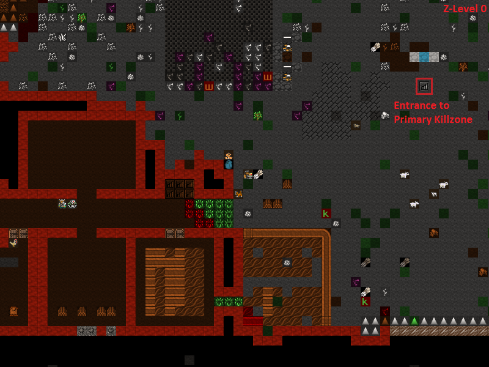 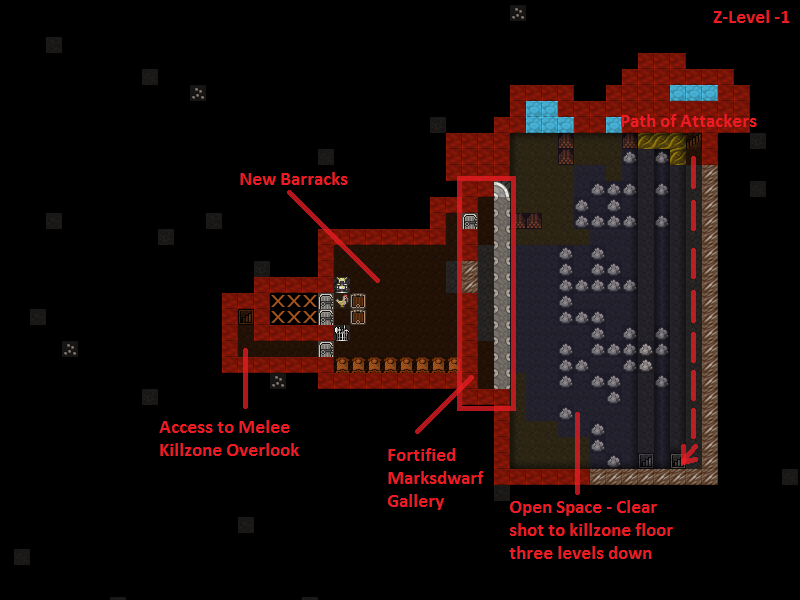 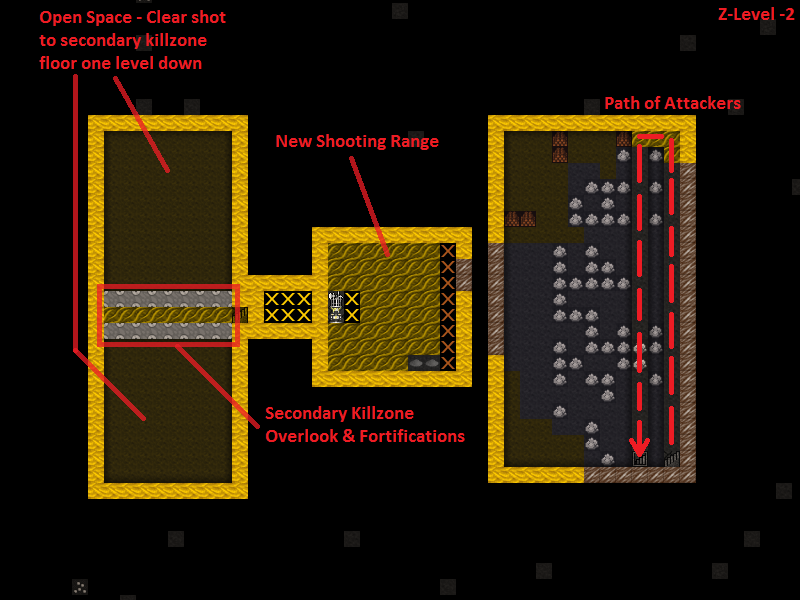 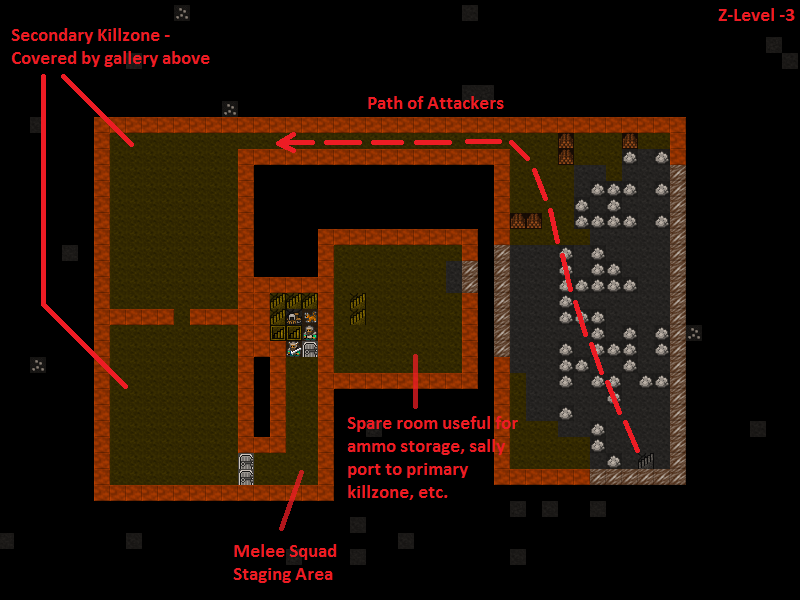Though formidible, these defenses are incomplete. Can you see the flaw? Our main stairwell is wide open, protected only by some traps! Remember that attackers will use the shortest route to get into your fortress, and right now the shortest route is over those traps. Let’s build a drawbridge that we can raise to block off our main entrance and force attackers to take the route through the killzone.
- Hit
b,gto bring up the Bridge placement menu. - Use
u,mandk,hto create a 3x3 footprint and place it at the entrance to the fortress, adjacent to the first line of traps. - By default, bridges retract when activated. We want ours to raise
to the left so that when raised, it blocks access to the fortress.
Hit
ato accomplish this. - Hit
Enterto place the bridge and use stone blocks to build it. - A Dwarf with the Architecture labor enabled will come to design the bridge and a Mason will then construct it.
Now we need to hook the bridge up to some kind of mechanism to raise it. The most straightforward method is to connect it to a lever. Levers do not need to be near the machines they operate, so let`s build ours in a high traffic area near the dining hall.
- Hit
b,T,land place the lever near the dining hall. - Once the lever and bridge are built, hit
q, place the cursor on the lever, and hita,bto bring up a list of bridges it can be linked to. - You should have only one bridge. If you have more, select the
entrance bridge and hit
Enterto Assign it to the lever. - Use any old mechanisms. Mechanism quality only effects the time delay for traps to fire when sprung, not bridges.
- You`ll see the Link a Building to Trigger job on the
lever’s
qscreen. A Mechanic will use the two mechanisms you selected to hook them up. - To raise/lower the bridge, hit
q, place the cursor on the lever, hitato Add new task,P. If the situation is critical - eg during a siege - hitnfor Do task now! and the closest Dwarf will run to pull it. - Go ahead and test it out. Be careful: any object or creature on the bridge when it raises will be flung across the map! Bridges can be weaponized in this way.
- Lastly, build a stone wall north of the bridge to seal off the diagonal gap. Good job! Now we can funnel attackers into our kill zone with a pull of a lever!
The finished bridge in the raised position:
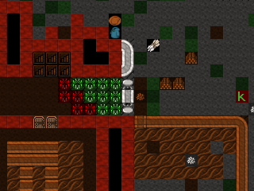9.3. Assigning Battle Stations¶
Finally, it’s a great idea to set up burrows for each killzone
gallery. Although you can use s, m to move squads
around, Marksdwarves have a bad habit of never standing in the
right position to shoot the massive army bearing down on them. A
failsafe method is to use the Alerts screen (m,
a) in conjunction with burrows.
Remember the Inside burrow we set up to keep civilians inside? The same principle applies here. We will make a tiny burrow for each killzone gallery, create cooresponding alert states, and set up orders to defend the specific burrow when the alert state is active. This will cause the squad subject to the alert to immediately move to the correct burrow.
- Start by creating a burrow on the main killzone gallery encompassing the areas where marksdwarves must stand to shoot - directly adjacent to the fortifications. Name this burrow “Prm Kllzn Gallery”.
- Do the same for the secondary killzone gallery. Name it “Sec Kllzn Gallery”.
- Make a burrow in the melee staging area as well. Name it “Melee Staging”.
- Hit
m,aand create three new alerts with descriptive names like “Prim. Kllzn. Gallery”, “Sec. Kllzn. Gallery”, and “Melee Staging Area.” Usecto Add alert andNto Name alert. Here is how the alerts panel should look:
Now we will associate each of these alerts with a cooresponding burrow so that when a squad is set to, for example, “Prim. Kllzn. Gallery” alert, it moves to occupy the “Prm Kllzn Gallery” burrow. The game calls this an Order and manages orders with the Squad Schedules interface.
- Hit
m,sto bring up the Squad Schedules interface. Make sure our first melee squad column is highligted. - Use
//*to cycle to the Prim. Kllzn. Gallery alert (displayed in the gray bar at the top of the screen). - Hit
oto Give order. Hitoagain until the Defend burrows order appears. - Highlight Prm Kllzn Gallery and press
Enterto Select it. - Use
-/+to set the minimum number of soldiers to the number in the squad as displayed on the right. Each of our melee squads should have three soldiers, so get it down to 3 soldiers minimum. - Press
Shift-Enterto enter the changes. - Hit
cto copy the order andpto paste it to each month for our first melee squad. We can also paste the order for each month under our second melee squad because that squad also has three dwarves. - For the Marksdwarf squad, do the same steps above but instead of three soldiers minimum, use however many soldiers are in the Marksdwarf squad. I have ten and I want them all to show up when I give the order, so I set 10 minimum.
- “Prim. Kllzn. Gallery” alert is set up!
- Now just do the same steps for each separate alert, but use the
appropriate burrow for each. On the Squad Schedules
panel, press
/,*to cycle to the next alert over, Sec. Kllzn. Gallery and set it up so that the Sec Kllzn Gallery burrow is used. After you`re done setting up that alert, do the same for the last alert - Melee Staging Area.
To order a squad to man a position, hit m, a,
highlight an alert, use 6 or the arrow keys to higlight the
squad you want to move, and press Enter so that a green
A appears next to the squad. The squad will execute the
Defend Burrow order we set above and move to the burrow
with weapons out and armor on. Although somewhat cumbersome, this
will guarantee that your Marksdwarves man an effective fighting
position at the critical time. Go ahead and give it a try.
With “Prim. Kllzn. Gallery” highlighted, the green A shows that The Merchants of Conjuring are under this alert and are moving to the “Prm Kllzn Gallery” burrow.
9.4. Further Fortifications¶
The surface entrance to our underground deathtrap is a choke point for attackers and will cause them to bunch up as they try to get in. Let`s build a tower to shower them with death! Here is a design I came up with that uses the existing stairs that run through the barracks. As a bonus, it covers the entrance way as well.
The main Marksdwarf gallery is directly above the drawbridge. It uses the terrain to cover the north and is completely sealed off from the outside.
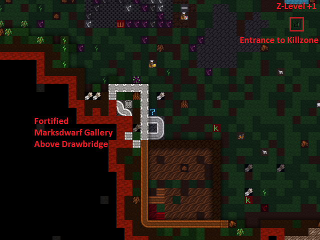A stone roof seals it from above. Create roofs by building floors
on the level above: b, C, f. Note: walls
create floors on the square directly above them, but fortifications
do not. Remember to build floors above all fortifications or
nasties will drop in from above!
Access is through a staircase…

…that leads to the barracks below ground.
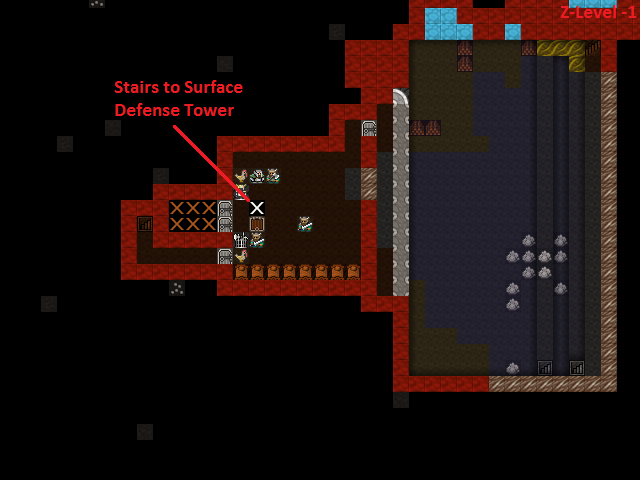Don`t forget to set up a burrow for this tower just like in the previous section!
9.5. Man Your Battle Stations!¶
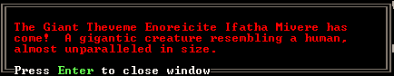The first test of my defenses came somewhat after this when a Giant appeared on the southwest corner of the map:
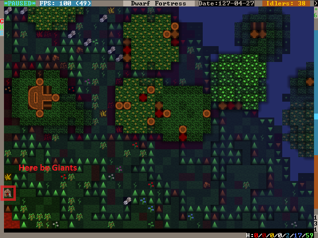Lets see how tough our defenses are. Our priority is to get everyone inside, batten down the hatches, and man the outer defenses.
- Set the civilian alert to Siege (
m,a, then select siege and pressEnter). This restricts civilians to the Inside burrow and will cause them to drop everything and run inside. Now is also a good time to ensure that your Inside burrow is in fact inside and out of the line of fire! - Station our Marksdwarf squad in the primary killzone gallery. Hit
a, select the Prim. Kllzn. Gallery Alert, move right to the Squads column, highlight the Marksdwarf squad, and hitEnter.A green A next to the Marksdwarf squad means that they will move to that burrow. - Station our Melee squads in the melee staging area. Use the same procedure as above, but activate the Melee Staging Area Alert for them.
- Now the tricky part. We need to shut our main drawbridge when
everyone is inside but before the Giant arrives. A good
method is to pause the game and use
.to advance time incrementally. Keep your eye on that Giant! If anyone is left outside, they will have to outrun the Giant as it comes in through the killzones. - If you lose track of the Giant, use the
Units screen (
u) to find it in the Others submenu and hitzto Go to Unit. Then pressfto follow it. - When the time is right, close the drawbridge by hitting
q, moving the cursor onto the lever, and hittinga,P,n. Bridges shut slowly, so give lots of time!
The gate shuts, our dwarves are in position, and the Giant is making a beeline for the killzones. Perfect. Just remember to reposition your Marksdwarves if the Giant makes it underground!
I mistime the throw of the lever but the Giant is distracted by the strategic diversionary livestock pastured outside, giving time for the gate to shut! Those poor sheep, though…

The Giant pauses to destroy the Craftsdwarf`s Workshops outside, then descends into the killzones…

and is struck down by the waiting melee squads.
Our defenses worked! It`s always fun to look at the combat log -
hit r, scroll down to the Giant Theveme
Enoreicite Ifatha Mivere is fighting! and hit Enter.
Scrolling up past the pages of Dwarves beating on the Giant, I notice that the Giant dodged a bolt when it entered the killzone. Look back at the second GIF above. Do you see what happened? The Giant appeared on the first level of the killzone walkway and immediately came under fire. When it dodged, it went over the side and landed on the second walkway! It was only a 1-z level drop so it did no damage, but what if we lined the killzone with iron spikes? There`s always room for improvement in fortress defenses!
Note
Don`t forget to set your squads back to Active/Training and civilians back to Inactive on the alerts menu!
9.6. Medic!!¶
If you`ve made it this far without a dwarven casualty, you are extremely lucky! Injury is a certainty in Dwarf Fortress, but adequate healthcare will keep your maimed citizens from succumbing to blood loss or infection. Dwarven healthcare is complex to set up, but a hospital system will keep even badly mangled dwarves in the army/workforce and prevent fort-ending tantrum spirals due to loss of loved ones. Once running, the whole thing is automated and requires little management.
A hospital requires:
- A source of fresh water - preferrably not muddy to minimize infection.
- Cloth - for bandages.
- Thread - for sutchurs.
- Splints - to set broken limbs.
- Crutches - allow injured Dwarves to be useful while recovering.
- Buckets - to wash and give water to patients (patients can drink only water in the hospital!)
- Beds - allow patients to be diagnosed, rest, and receive water.
- Tables - for surgical operations.
- Traction benches - immobilize patients when setting bones.
- Soap - to clean wounds and prevent infection.
- Gypsum powder - for casts.
- A chief medical dwarf - to diagnose injuries, assigned in the
nobles screen (
n). - Doctors - Dwarves with the various healthcare jobs enabled.
That sounds like a whole lot, but you likely have most of it on hand. Get started by designating a hospital zone. I evicted everyone from our original set of bedrooms and hollowed out those rooms to be my hospital zone.
- Hit
i, place the zone andhto make it a hospital. - Build and place beds and traction benches in the hospital zone with tables adjacent to them. Adjacent tables make it easier to move a patient for surgury.
- You probably will need to build some chains or ropes for the traction benches. The traction benches themselves are made at the Mechanic’s workshop using one chain/rope, one mechanisms, and a table.
Here is a setup with tables and traction benches clustered around the beds:
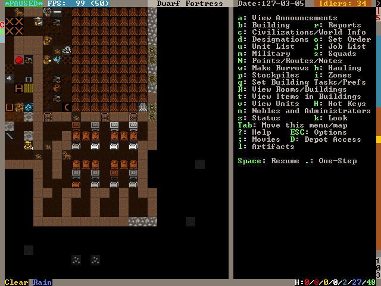- Hospitals require containers to store supplies. Hit
b,hto build six or so Containers within the hospital zone. Coffers are best because bags are used in other industries. - Once the containers are placed, Dwarves will start stocking the
hospital zone with supplies. Let`s take a look at those parameters.
Hit
i, place the cursor over the hospital zone, and hitHto Set hospital parameters.
Already, we have enough Thread and Cloth. Note that hospital item counts are a thousand times the acutal units, so you don’t really need 75,000 stacks of cloth. Let`s move on to the other items.
- That bucket count looks low. Select Buckets: 0/2 with
2/8and use6/4to increase it to 10. - Queue up 10 splints, 10 crutches, and 20 buckets at the Carpenter’s Workshop.
- Build a Kiln with
b,e,kand queue up 10 Make plaster powder jobs. Each job requires a bag and a boulder of gypsum or other plaster-making stone, and we have gypsum in abundance. - Build a Soap Makers Workshop (
b,w,S) and an Ashery (b,w,y). - Soap’s recipe is: Lye + Tallow/Oil = Soap. Lye is made from ash at a Wood Furnace. Queue up 10 units of ash at the Wood Furnace and 10 units of Lye at the Ashery. Finally queue up 10 units of soap (Make soap from tallow) at the Soap Maker’s Workshop. If you have no tallow, butcher an animal and a Dwarf will automatically render the fat into tallow at a Butcher’s Shop.
Great work! While your dwarves execute all the orders you’ve put in, let’s secure a source of fresh water. Easy access to fresh water is essential because injured dwarves cannot drink booze. Moreover, water must be brought to them as they lay injured in bed. Therefore, it`s critical to have a year-round source of fresh water close to our hospital. Otherwise, injured dwarves will die from dehydration in their hospital beds.
Let`s take stock of the fresh water sources we have available.
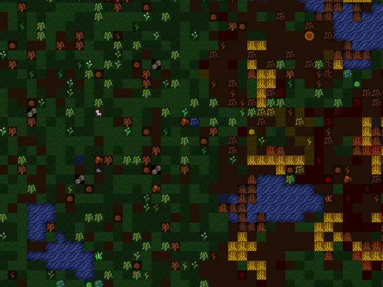To the east we have a number of small ponds. When we look at the
water in them with k, we see Murky Pool filled
with Stagnant Water [7/7]. Murky pools are no good to
us because Stagnant Water increases the risk of
infection when used to wash wounds and also creates an unhappy
thought in any Dwarf that drinks it. Moreover, these pools are
frozen for half the year! That pretty much rules these out unless
we have no other choice.

Fortunately, we have a small river in the northeastern portion of
the map. Using k to look at its water, we see that it`s
fresh, wholesome, Water [7/7]. This is what we`ve been
looking for. The only problem is that like the Murky
Pools, the river is frozen much of the year and it`s very far from
the hospital. However, if we divert the water into an underground
cistern, it will not freeze and we can accumulate enough to last us
through the cold months. Let`s do some hydrological engineering!
First, let’s dig out our cistern. It`s best to locate it near the hospital and it needs to be at least two z-levels deep to avoid mud contamination. If water is taken from a 1 z-level source and the floor has a Pile of mud on it, the water will cause infections. The easiest way to avoid this is to make the cistern two or more layers deep. Here is where I placed mine:
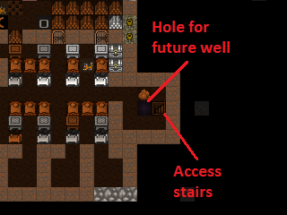It goes down an additional 3 z-levels directly below the well room:
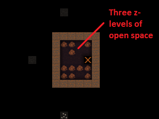Now we have to bring the water to the cistern. Easy, right? Just dig a really long trench from the river and connect it up. Actually, that`s a recipe for a flooded fortress! Water pressure will act to force the river water - flowing from above our cistern - up over the top of it and into the rest of the fortress. So, we need to use floodgates controlled by levers to manage the water flow. The only wrong way to accomplish this is the one that floods the fortress, but below is an example scheme that prioritizes flood safety.
- Queue up 20 floodgates from the Masons.
- Stick a door on the well room. If the worst happens, you can
always lock that door to stop the water until you figure out what
to do. Also, keep pets out of it by pressing
owith the door selected - pets have a bad habit of drowning in cisterns and spillways. - Dig a spillway tunnel from the top of the cistern to the edge of
the map, then Smooth (
d,s) and Carve fortifications (d,F) on the stone at the edge of the map. That will allow water to flow off the edge of the map in the event of overflow, relieving pressure in the cistern.
- Build Floodgates (
b,x) between the cistern and the spillway. Make sure to leave one tile free adjacent to the floodgates to allow access for when we hook them up to the control lever. - Build a Lever (
b,T,l). Place it in a location where you’ll remember what it does and where it will be accessible in the event of a flood. You can use a Note (N) to mark it, too. - Connect the Lever to the Floodgates. Hit
q, place the cursor on the Lever,f, and select one of the floodgates you placed, using any old mechanisms. Then hitq,fagain and select the other floodgate to hook it up, too. - When the Mechanic finishes these jobs, test out the
Lever by queueing a Pull the Lever job
(
a,P). If both floodgates open, it`s all set up! Close them again when you’re satisfied.
Next, let’s dig the water channel from the river.
Start at the river and Channel (d, h) a
3x1 section as pictured. Make sure to leave at least one tile
intact between the river and the channel! Otherwise, the channel
will flood prematurely. When we are ready to tap the river, we will
Channel out this canal to let the water flow.
- We need to make a ramp all the way down to the top of our cistern at z-level -6. Remembering that each Channel job will create a ramp on the tile below it, we move one tile south and one z-level down for each subsequent Channel designation.
- At z-level -6, Dig a 3x1 tunnel south to the spillway tunnel…
- then dig west until the cistern.
- Dig out two wall tiles at the cistern.

- Build Vertical Bars (
b,B) across the water supply tunnel to keep the surface riffraff out. Although bars can be destroyed by a building destroyer (like that Giant from earlier), we will make sure that the bars stay submerged and inaccessible to all but acquatic building destroyers. - After the Vertical Bars are built, place three Floodgates across the tunnel to the south of the Vertical Bars.
- Dig a 3x1 relief valve to connect the water supply tunnel to the spillway tunnel. Then install Floodgates across it. Safety first!
- Install the last Floodgates between the water supply tunnel and the cistern. If dwarves get stuck behind them, move on quickly to the next step where we install levers to open the gates.

Build three Levers (b, T, l) to
control the three sets of floodgates. It`s important to keep track
of which lever controls which floodgate, so I like to build a mini
facsimile of the tunnel network and place the levers where the
floodgates are located. It`s also a great idea to put a
Note on each lever (N, p) and name it
with n so you don`t forget. Here is the scheme that I came
up with:
- Hook up each lever to the cooresponding set of
floodgates. Select the correct floodgate
with
+/-and use any old mechanisms. - Test out the levers after they are hooked up to ensure that each one operates the appropriate set of floodgates.
- Stick a door on the entrance to your lever room in order to further floodproof it.
Floodgates can become stuck open if debris like boulders block their tile when open, and moving water tends to push boulders under open floodgates. This floods the fortress. Therefore, we must remove all boulders from our waterworks.
- Hit
i, designate a 1x1 zone somewhere outside the waterworks, and hitdto make it a Garbage Dump. - Hit
d,b,dto enable Dump Items designation. Designate all stone in the water supply tunnel and spillway tunnel to be dumped. Our workforce should be large enough by this point to get the job done relatively quickly.
It`s time to remove the dike between the river and the water channel, but it`s a good idea to take some precautions when doing so because dwarves tend to path through fast-moving water and get swept away. We`d like to keep our Legendary +5 Miners alive despite their idiocy.
- Ensure all floodgates are closed.
- Hit :kbd`d`, :kbd`o`, :kbd`r` and designate a Restricted Traffic Area encompassing the dike and the ditch. This will make dwarves prefer any route other than over the designated area and hopefully clue them in that walking over it means certain death.

- Channel out (
d,h) the middle tile of the dike at the river. Then, Channel out the outer two tiles. - If anyone drowns, build them a rock Slab at a mason’s workshop and have a Craftsdwarf Engrave Memorial Slab. Then place it next to the river so the idiot`s family will know why he died. Disregard any dead bodies in the water supply.
We now have Water [7/7] from the river held back by the water supply tunnel floodgates at the bottom of the ramp we dug. That means that everything above that point is completely submerged by water. Therefore, if we opened both the water supply tunnel floodgates and the cistern floodgates at this point, the water pressure would push water all the way back up to z-level -1 - the level of the river. Consequently, we must ensure that at no point is the cistern opened directly to the river.
- Ensure all floodgates are closed.
- Open the water supply tunnel floodgates at the base of the ramp and allow the water to fill the entire water supply tunnel.
- When the water has reached [7/7] for most of the water supply tunnel, close the water supply tunnel floodgates.
- Confirm that the water supply tunnel floodgates at the base of the ramp are closed, then open the cistern floodgates.
- Allow the cistern to fill. Due to our design, the cistern will not flood so long as the floodgates leading to the river remain closed. There`s nothing to do but wait!
- While the cistern is filling up, hit
b,lto build a Well on the open space above the cistern. Use the highest-quality materials available because dwarves get happy thoughts when they use a well-put-together well. - When the well is complete, hit
i, designate a 3x3 zone in the well room, and hitwto make it a water source. - If you feel like enhancing the nanny state of your fortess, you can put some Horizontal Bars over the river water intake ramps at z-level 0 and a Hatch over the well access stairs. Forbidding the Hatch will at least keep the dwarves from drowning themselves at that location.
The cistern is filling nicely.
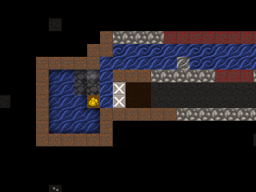- Check the water level the top level of the cistern (one z-level
below the well room) using
k. When it is at [7/7] or [6/7], close the cistern floodgates. If it stabilizes before reaching at least [6/7], close the cistern gates, refill the water supply tunnel, seal it from the river, and reopen the cistern gates. - At this point we could leave the cistern floodgates open indefinately. So long as the water supply floodgates are closed to the river, the cistern will not overflow.
In the (extremely likely) event that something goes wrong and the fortress begins flooding, take immediate action to:
- Forbid and Keep Tightly Closed (
q,l,o) the door to your lever room and all doors leading to the flooding area. Doors are watertight so long as they stay shut. - Open all floodgates to your spillway. Use
a,P,non the Levers for maximum haste. - Close all other floodgates.
- If things are particularly dire, extend your central staircase downward until you hit the caverns. The water will tend to flow down your staircase and into the caverns where there is usually enough room for it to dissipate. That may buy you enough time to dig a permanent spillway or seal off the flooded parts of the fortress, but it also opens yourself to visits from uninvited guests.
Our last task is to staff our new hospital. We need to appoint a chief medical dwarf so that patients get timely care.
- Hit
nto bring up the Nobles panel. Scroll down to chief medical dwarf and hitEnter. - The first dwarf listed is the best diagnostician available, so
highlight him/her and hit
Enter.
With that, we have a functional hospital! Dwarves can recover from very severe injuries with a good healthcare system in place, so don`t be afraid to send your melee units into combat. Now, broken bones will build character, not body count!
9.7. The End!¶
And welcome to the end of the tutorial! By now you should be able to play the game on your own. You can also check out the tutorials in the index, for short chapters that cover a particular topic.
You might consider a mega project like an enormous tower, a castle, or a fortress entirely surrounded by magma. There are many options, and just surviving the increasingly severe raids from goblins and other critters can be a challenge.
You’re also ready to upgrade to the Starter Pack, and explore the wider world of DF addons. From alternative graphics to advanced tools or a real 3D visualiser… the world is your oyster!